Yaz, işaretle, anlat.
Penglide; el yazısıyla not almak, PDF işaretlemek ve online özel ders anlatmak için tasarlanmış bir not defteri uygulamasıdır. Ekranını paylaş, kaleminle anlat.
Android ve iOS için. Tablette en iyi çalışır, telefonda da çalışır.
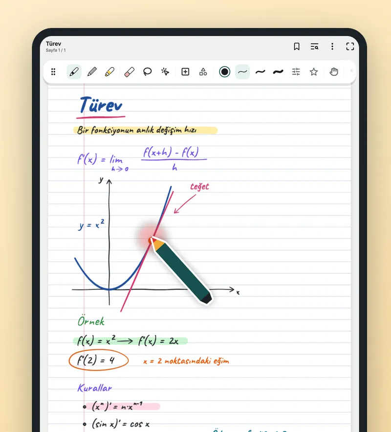
- Hesap yok
- Reklam yok, izleme yok
- İnternetsiz çalışır
- 17 kalem ve fırça
- Android ve iOS
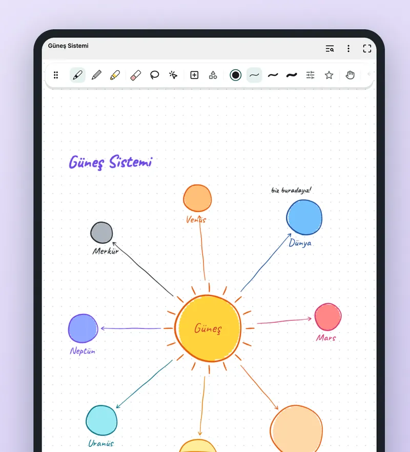
Öğrencin nereyi gösterdiğini ve yazdığını görür
Ekranını paylaşarak ders anlatırken öğrencin elini ve kalemini göremez. Penglide'ın ders anlatım kalemi bu sorun için yapıldı.
- Kalem biçimli işaretçiKalemin ekrana yaklaştığı yerde görünür ve onu izler.
- Ucun altında halkaYazarken yumuşak bir halka belirir, dikkat doğru yere gider.
- Lazer işaretçiGösterdiğin yerde kısa süre kalan bir iz bırakır, sayfayı kirletmez. Kalma süresini sen seçersin.
- Ders zamanlayıcısıHazır süreler ya da kendi belirlediğin süre.
- Sonsuz tuval ve ikinci ekranBeyaz tahta gibi sınırsız alanda anlat ya da sayfayı bağlı ikinci ekranda göster.
- Çalışma bandıCevabın üzerini kapat, dokununca açılsın.
Ders anlatım kalemi, ekrana değmeden algılanan aktif kalem ister.
Kağıttaki gibi el yazısı not
Renkli şemalar, çizimler ve formüller kaleminin ucunda.
- 17 kalem ve fırçaTükenmez, dolma kalem, kurşun kalem, fosforlu kalem, kaligrafi, sulu boya ve daha fazlası.
- Basınca duyarlıS Pen gibi aktif kalemler için hazırlandı.
- Özgürce düzenleSilgi, kement ile seçme, taşıma, döndürme, boyutlandırma.
- Her iş için sayfaDüz çizgili, kareli, noktalı, müzik ve daha pek çok şablon. Kendi şablonunu da kaydet.
- Mürekkepten fazlasıGeometrik şekiller, katmanlar, metin kutuları, görseller ve tablolar.
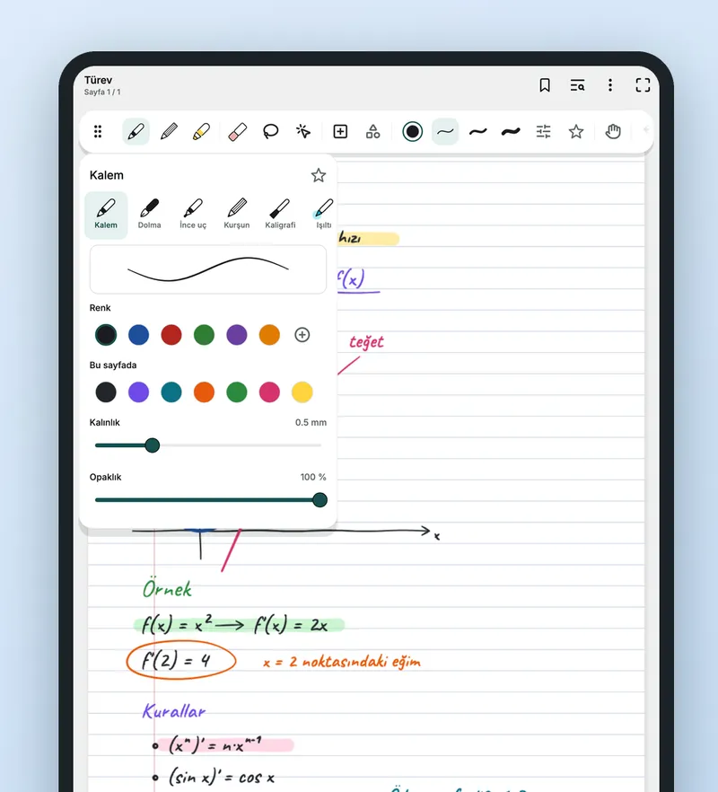
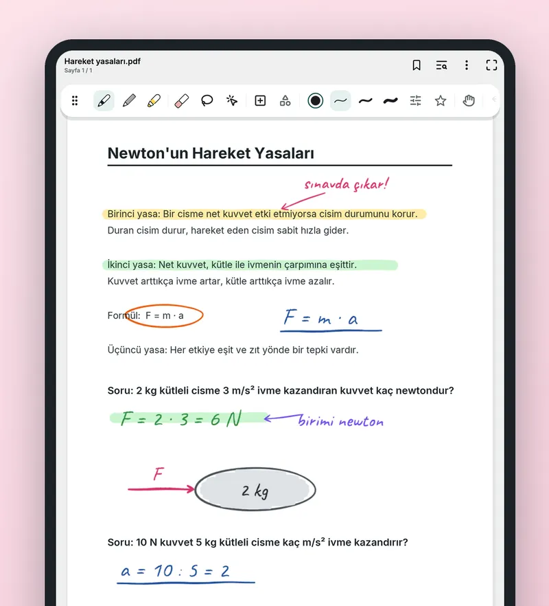
PDF'lerin üzerine yaz
Kitabı, testi, çalışma kağıdını işaretle, PDF olarak geri gönder.
- İçe aktar ve yazPDF'leri içe aktar, kitapların, testlerin ve çalışma kağıtlarının üzerine yaz.
- Notların için yerKenar boşluklarını genişlet.
- PDF olarak paylaşMetin seçilebilir kalacak şekilde PDF olarak dışa aktar, öğrencine gönder.
Bütün derslerin bir arada
Renkli klasörler, etiketler ve hızlı arama.
- Klasör, etiket, favori, çöp kutusuHer sınıf ve öğrenci bulabileceğin yerde dursun.
- AramaBaşlıkta, yazılı metinde ve PDF içeriğinde arar. El yazısının içinde arama yapmaz.
- Sesli notSes kaydı yazınla birlikte oynatılır.
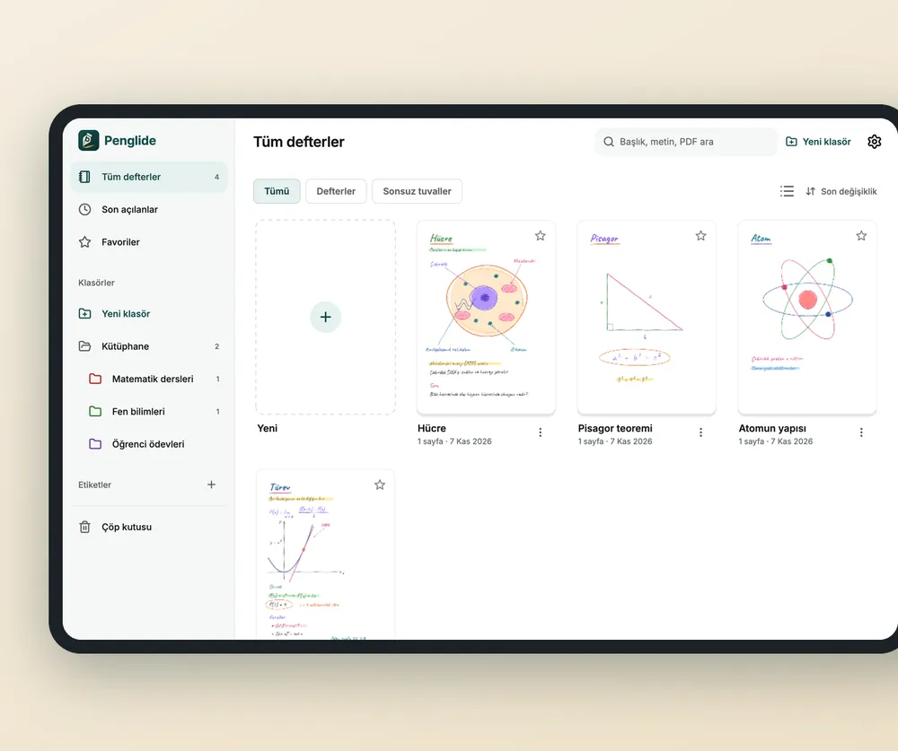
İçine bir bakış
Örnek notlarla hazırlanmış ekran görselleri.
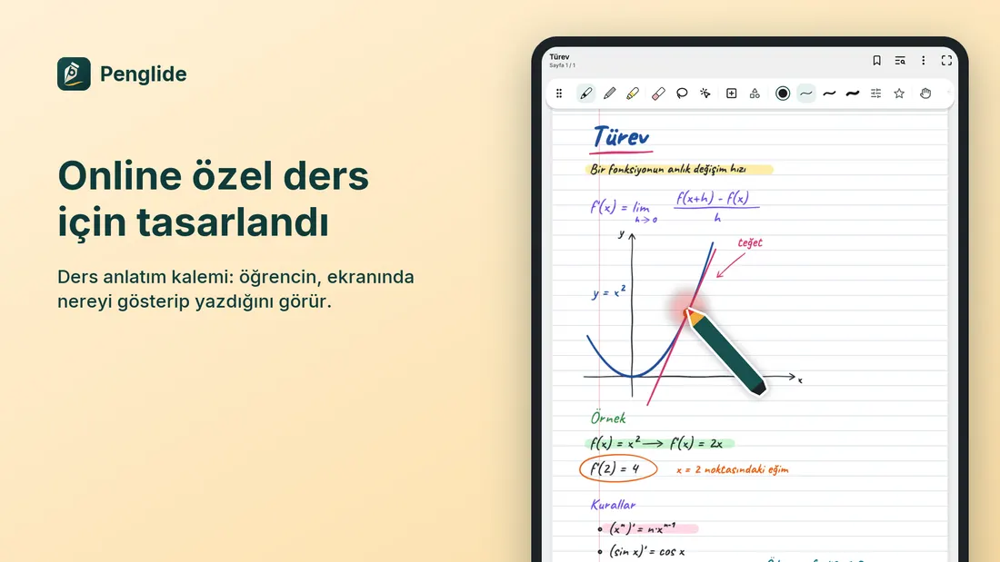
Online özel ders için tasarlandı Ders anlatım kalemi: öğrencin nereyi gösterip yazdığını görür. 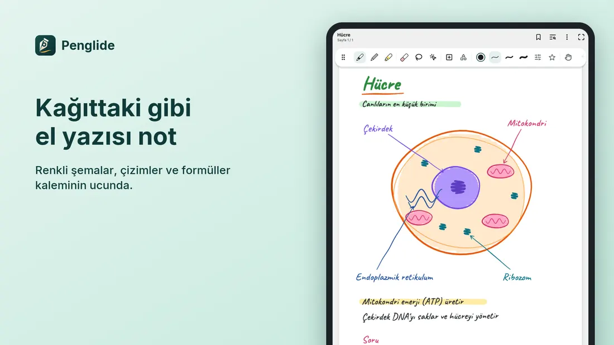
Kağıttaki gibi el yazısı not Renkli şemalar, çizimler ve formüller. 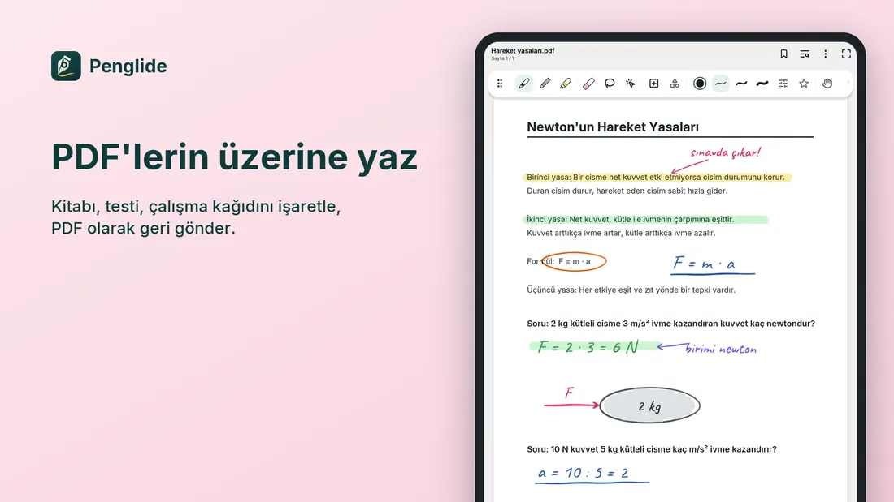
PDF'lerin üzerine yaz Kitabı, testi, çalışma kağıdını işaretle. 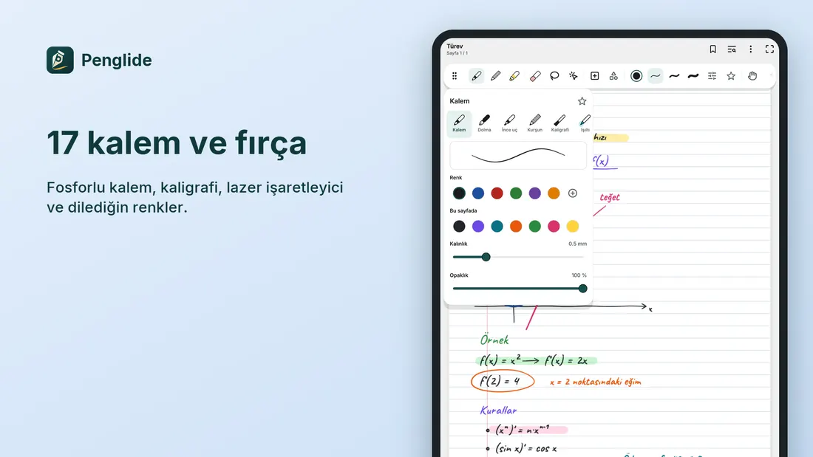
17 kalem ve fırça Fosforlu kalem, kaligrafi, lazer işaretleyici ve dilediğin renkler. 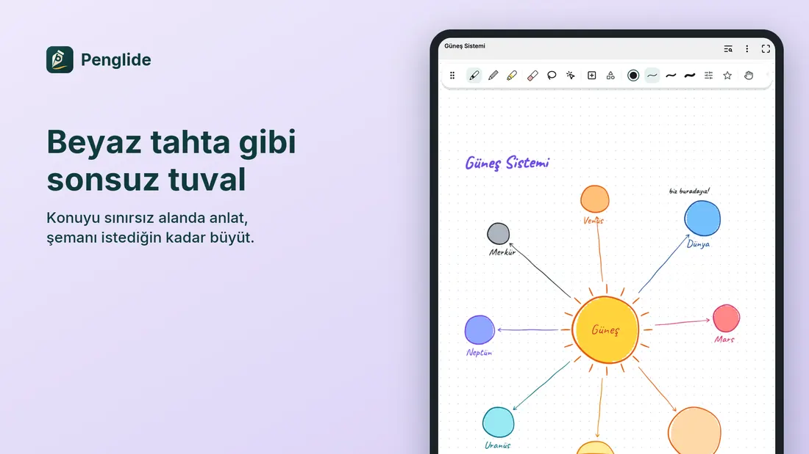
Beyaz tahta gibi sonsuz tuval Konuyu sınırsız alanda anlat. 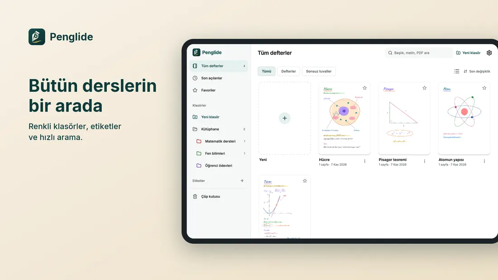
Bütün derslerin bir arada Renkli klasörler, etiketler ve hızlı arama. 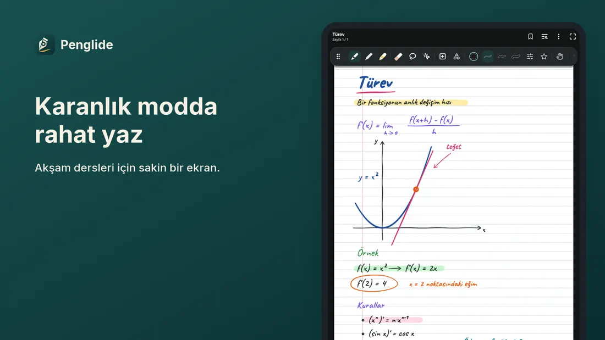
Karanlık modda rahat yaz Akşam dersleri için sakin bir ekran.
Notların sana ait kalır
Hesap gerekmez, internetsiz çalışır. Sunucumuz yok, notların bize gelmez.
- Hesap yokUygulamayı aç ve yaz. Üye olmak gerekmez.
- Reklam yok, izleme yokReklam yok, analiz yok.
- Sunucu yokSunucumuz yok, notların bize gelmez.
- CihazındaDefterler uygulamanın özel depolama alanında, cihazında durur.
- Şifreli ve kilitliŞifreli defterler ve kilitli notlar.
- Kontrolün sendeİstersen seçtiğin bir klasöre otomatik kopya.
Sorular
Hangi cihazlarda çalışır?
Penglide tablet için tasarlandı, telefonda da çalışır. Android ve iOS için mevcuttur.
Kaleme ihtiyacım var mı?
Parmakla ya da kalemle yazabilirsin. S Pen gibi aktif kalemler basınca duyarlı yazım sağlar. Ders anlatım kalemi, ekrana değmeden algılanan aktif kalem ister.
Hesap ya da internet gerekir mi?
Hayır. Penglide hesap istemez ve internetsiz çalışır.
Arama el yazımı buluyor mu?
Hayır. Arama başlıkta, yazılı metinde ve PDF içeriğinde çalışır; el yazısının içinde aramaz.
Notlarım nerede duruyor?
Cihazında. Ayarlar’dan bir kütüphane klasörü seçersen kopyalar oraya da yazılır. Ayrıntılar için gizlilik politikasına bak.
Notları öğrencilerime gönderebilir miyim?
Evet. Defteri metni seçilebilir kalan bir PDF olarak dışa aktar, sistem paylaşım menüsünden gönder.
İlk dersini hazırla
Özel ders öğretmeni, öğrenci ya da tabletinde el yazısıyla not tutmak isteyen herkes için.